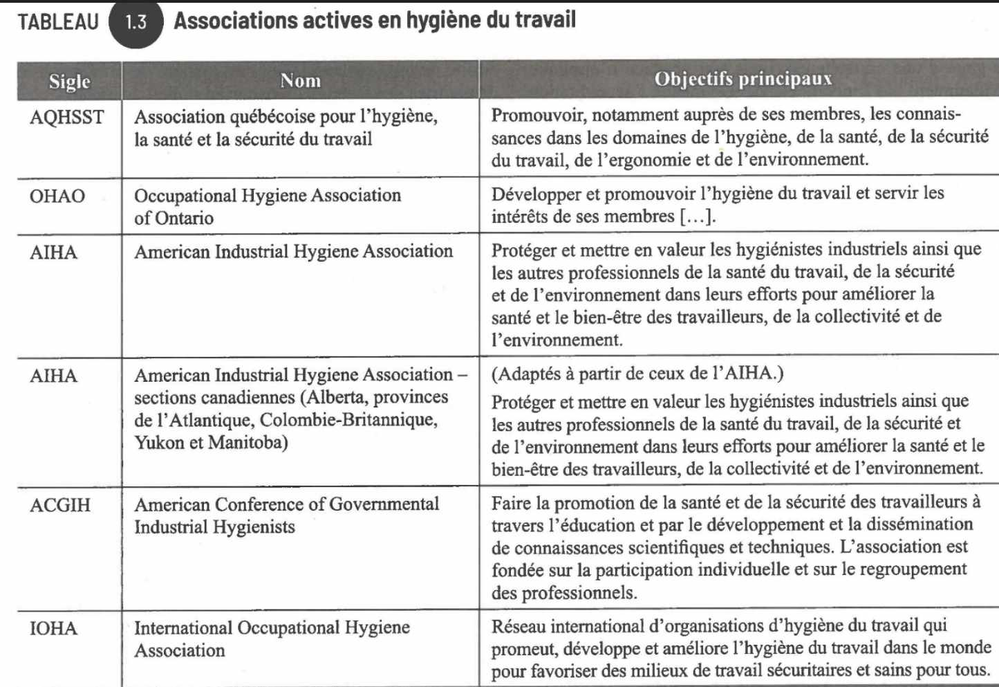
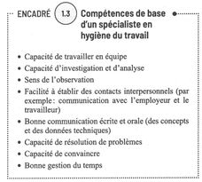
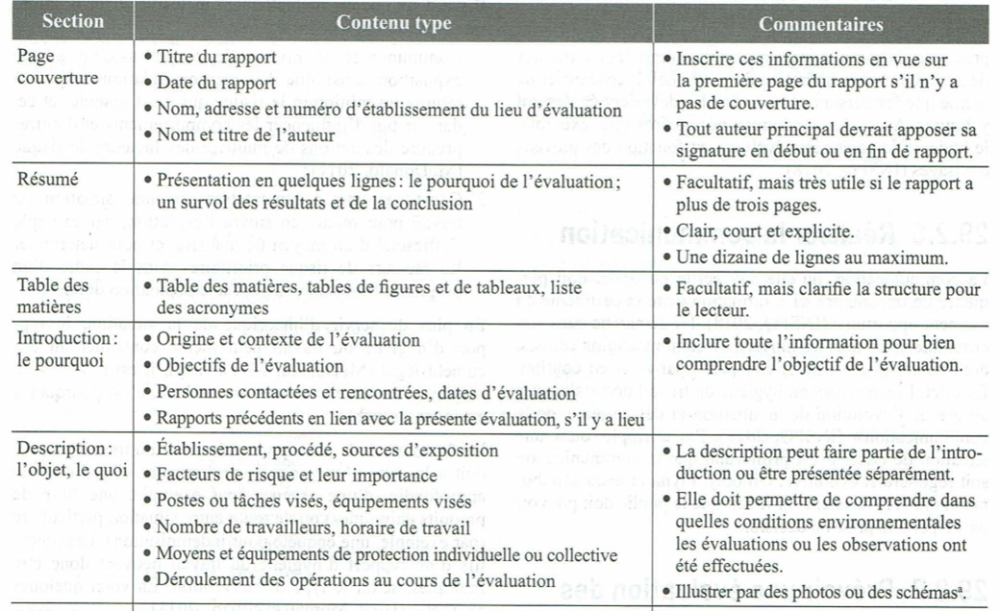
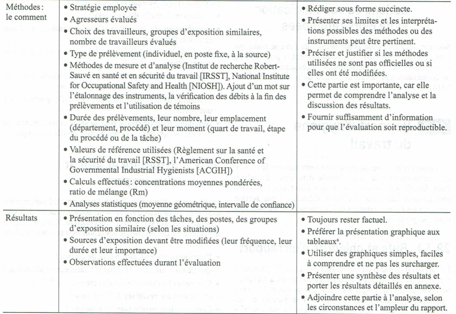
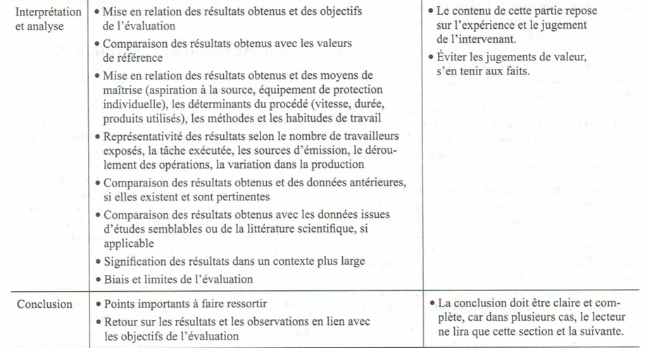
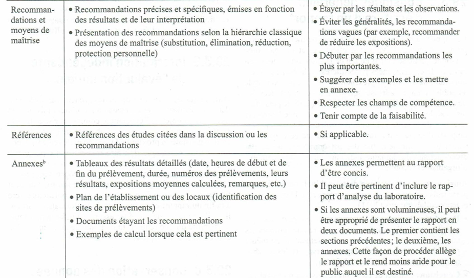

Démarche AREC
L'hygiène du travail est la discipline d'anticipation, de reconnaissance, d'évaluation et de maîtrise (AREC) des risques pour la santé en milieu de travail. La démarche structure l'intervention en deux grandes phases opérationnelles : l'enquête préliminaire (reconnaissance qualitative) et, au besoin, l'enquête approfondie (quantification de l'exposition par échantillonnage). Le tout se conclut par un rapport d'hygiène avec recommandations priorisées. En mine, elle balise la gestion des poussières, des gaz, du Bruit en milieu de travail, de la chaleur et des contaminants chimiques d'opération, en s'appuyant sur la LSST, le RSST et le RSSM.
Table des matières
- Définition de l'hygiène du travail
- Les 4 phases AREC
- Pourquoi une démarche structurée
- Enquête préliminaire
- Évaluation et priorisation du risque
- Enquête approfondie et stratégie d'échantillonnage
- Rapport d'hygiène
- Conservation des dossiers
- Rôle de l'hygiéniste
- Cadre légal québécois
- Application terrain
- Ressources
Définition de l'hygiène du travail
Selon l'Association internationale pour l'hygiène du travail (AIHT), l'hygiène du travail est
« Discipline vouée à l'anticipation, la reconnaissance, l'évaluation et la maîtrise des risques en milieu de travail ayant pour objectif de protéger la santé et le bien-être du travailleur comme de la communauté en général. »
C'est une discipline de prévention primaire : elle agit sur les conditions d'exposition, pas sur les conséquences cliniques.
Les 4 phases AREC
| Étape | Description |
|---|---|
| Anticipation | Prévoir les risques avant qu'ils ne se manifestent (nouveau procédé, nouveau produit, nouvelle zone de travail) |
| Reconnaissance | Identifier qualitativement les dangers présents (enquête préliminaire) |
| Évaluation | Évaluer qualitativement ou quantitativement le niveau d'exposition (enquête approfondie) |
| Maîtrise | Mettre en place les moyens de contrôle, voir Hiérarchie des moyens de prévention |
Les deux certifications professionnelles principales sont le ROH (Registered Occupational Hygienist) au Canada et le CIH (Certified Industrial Hygienist) aux États-Unis. Le schéma ci-dessous présente leurs voies d'accès et compétences requises.

Toucher l'image pour l'agrandirL'examen et les compétences exigés par l'AQHSST (2021) sont synthétisés ci-dessous.

Toucher l'image pour l'agrandirPourquoi une démarche structurée
Trois finalités principales
- Produire un diagnostic des facteurs de risque.
- Vérifier la conformité réglementaire.
- Assurer la surveillance de l'exposition à moyen et long terme.
Enquête préliminaire
Objectifs
- Identifier et qualifier les risques chimiques, physiques, biologiques, TMS, mécaniques et psychosociaux.
- Évaluer les moyens de maîtrise déjà en place (EPI, ventilation, gardes).
- Recueillir les préoccupations des travailleurs et de l'employeur.
- Prioriser les facteurs de risque.
- Décider de la nécessité d'une enquête approfondie.
Sources d'information
- Visite du milieu de travail (observation, odeurs, sources d'émission, EPI).
- Entrevues (travailleurs, superviseurs, RPSAT, comité SST).
- Documentaire : programmes en place (bruit, espaces clos, Protection respiratoire (APR)).
- Service de santé de l'entreprise.
La limite olfactive peut être très supérieure à la VEMP. Exemple : chloroforme limite olfactive 214 ppm vs VEMP 50 ppm. Le CO est inodore. Ne jamais se fier au nez pour valider la salubrité d'une atmosphère.
Évaluation et priorisation du risque
Critères de priorisation (CCHST, CSA, INRS)
- Gravité des effets et voie d'exposition.
- Intensité de l'exposition.
- Nombre de personnes exposées.
- Capacité de quantifier et d'évaluer.
- Capacité à résoudre le problème.
- Perception et préoccupations des parties.
Méthodes spécialisées INRS
- Évaluation du risque potentiel.
- Évaluation du risque d'inhalation.
- Évaluation du risque cutané.
Enquête approfondie et stratégie d'échantillonnage
Référence principale : Guide IRSST T-06, Guide d'échantillonnage des contaminants de l'air en milieu de travail (8e éd.).
Éléments d'une stratégie
| Question | Décision |
|---|---|
| Que échantillonner ? | Contaminants priorisés à l'enquête préliminaire |
| Où ? | Zone respiratoire ou ambiance, selon objectif |
| Qui ? | Travailleur le plus exposé ou groupes homogènes d'exposition (GHE) |
| Quelle méthode ? | Pompe + tube / filtre, dosimètre, lecture directe |
| Comment ? | Selon les fiches méthodes IRSST ou NIOSH |
| Combien de temps ? | Suffisant pour atteindre la limite analytique et représenter le quart |
La représentativité de l'échantillon doit refléter les conditions normales d'exposition. Voir Calculs d'exposition et ajustements TPN pour le traitement des données et les limites de confiance (LCI / LCS).
Rapport d'hygiène
Le rapport doit contenir
- Objet et contexte.
- Méthodologie d'évaluation.
- Résultats (concentrations, comparaison aux VEA).
- Interprétation (respect du RSST, ratio de mélange).
- Recommandations hiérarchisées, voir Hiérarchie des moyens de prévention.
- Suivi proposé.
Conservation des dossiers
L'article 44 du RSST encadre la conservation des dossiers d'hygiène. Les schémas suivants synthétisent les durées, supports et accès comparés au cadre OSHA et aux pratiques de Santé publique.

Toucher l'image pour l'agrandir
Toucher l'image pour l'agrandir
Toucher l'image pour l'agrandir
Toucher l'image pour l'agrandirRôle de l'hygiéniste
- Anticiper les risques pour la santé liés aux procédés et aux contaminants.
- Comprendre les voies d'exposition et les effets des contaminants, voir Maladies professionnelles en mine.
- Évaluer l'exposition qualitativement ou quantitativement.
- Recommander des moyens de contrôle pour éliminer ou réduire l'exposition à des niveaux acceptables.
- Concevoir, recommander et tester des stratégies de prévention.
- Participer à la gestion globale des risques.
- Former et informer les travailleurs et conseiller la direction.
- Travailler en équipe multidisciplinaire.
Exemples de tâches en mine : évaluations d'exposition aux poussières de silice ou aux DPM (diesel particulate matter), audits de ventilation souterraine, enquêtes après IADO (intoxication à déclaration obligatoire), conception de programmes en bruit, espaces clos ou protection respiratoire.
Cadre légal québécois
La LSST (Loi sur la santé et la sécurité du travail, chapitre S-2.1) est la loi cadre. Près de 46 règlements en découlent. Les principaux pour l'hygiène
- RSST (S-2.1, r. 13) : principal règlement en hygiène industrielle. Annexe I = VEA pour ~700 substances, voir VEA et normes RSST.
- CSTC (Code de sécurité pour les travaux de construction, S-2.1, r. 4).
- RSSM (Règlement sur la santé et la sécurité du travail dans les mines, r. 14) : agresseurs souterrains, qualité de l'air, ventilation, services sanitaires.
- Règlement sur l'hygiène dans les travaux de fonderie (r. 15).
Référence technique obligatoire : Guide IRSST T-06.
L'hygiène du travail mobilise plusieurs disciplines : chimie, biologie, toxicologie, épidémiologie, statistique, ingénierie, droit, physique. Une enquête sérieuse exige souvent la collaboration de plusieurs experts (ventilation, métallurgie, médecine du travail, ergonomie).
Application terrain
Configurations typiques en mine où l'hygiène s'applique
| Configuration | Risques d'hygiène typiques |
|---|---|
| Forage et minage souterrain | Programme de prévention silice cristalline respirable, DPM, Bruit (hub), vibrations |
| Concasseur et convoyeurs | Poussières, bruit, chaleur (en été) |
| Usine de traitement (broyeur, flottation, lixiviation) | Réactifs chimiques, brouillards d'acide, cyanures, contaminants spécifiques au minerai |
| Atelier mécanique et soudage | Fumées de soudage, vapeurs de Solvants organiques, bruit |
| Conduite d'équipement minier diesel | DPM, vibrations corps entier, monoxyde de carbone |
| Entrer dans un espace clos en sécurité (silos, réservoirs, conduits de ventilation) | Atmosphères appauvries en O2, gaz toxiques |
Particularités d'une enquête d'hygiène en site minier
| Élément | Spécificité minière |
|---|---|
| GHE | Souvent par activité minière (foreur, jumbo, conduite de camion, opérateur usine) plutôt que par poste fixe |
| Stratégie | Échantillonnage saisonnier en surface, en continu pour les agresseurs souterrains (CO, NO2, DPM) |
| Sources mobiles | Engins diesel : prélèvements représentatifs sur travailleur, pas en poste fixe |
| Quarts | 10 h ou 12 h : ajustement VEMA systématique |
| Sautage | Surveillance post-tir avant reprise d'activité (CO, NO2) |
| RSSM | Articles spécifiques sur ventilation, qualité de l'air, puits de mine |
Leviers spécifiques au secteur minier
- Conception de la ventilation souterraine principale et auxiliaire (RSSM art. 100 et suivants).
- Surveillance continue (O2, CO, NO2, H2S) via réseaux fixes ou détecteurs personnels.
- Programmes d'hygiène intégrés à la gestion du chantier (planification des tirs, dilution post-sautage, contrôle d'empoussiérage).
- Coordination avec la santé au travail (SIVET, registres d'exposition).
- Interface avec les programmes RPS quand un agresseur physique (bruit, chaleur) interagit avec la fatigue ou la charge mentale, voir wiki Wiki SST psychosociale - Mines.
Documentation type d'une enquête en mine : programme d'hygiène annuel, registre d'exposition par GHE, suivi des actions correctives, lien avec le programme RSSM, échange avec le médecin désigné.
Ressources
| Document | Type | Source |
|---|---|---|
| Guide d'échantillonnage des contaminants de l'air (T-06) | Guide technique | IRSST |
| Méthodes analytiques | Fiches | IRSST, NIOSH |
| Stratégie d'évaluation AIHA | Guide | AIHA |
| RSST annexe I (VEA) | Règlement | LégisQuébec |
| RSSM (Règlement SST mines) | Règlement | LégisQuébec |
| Reptox (base toxicologique) |